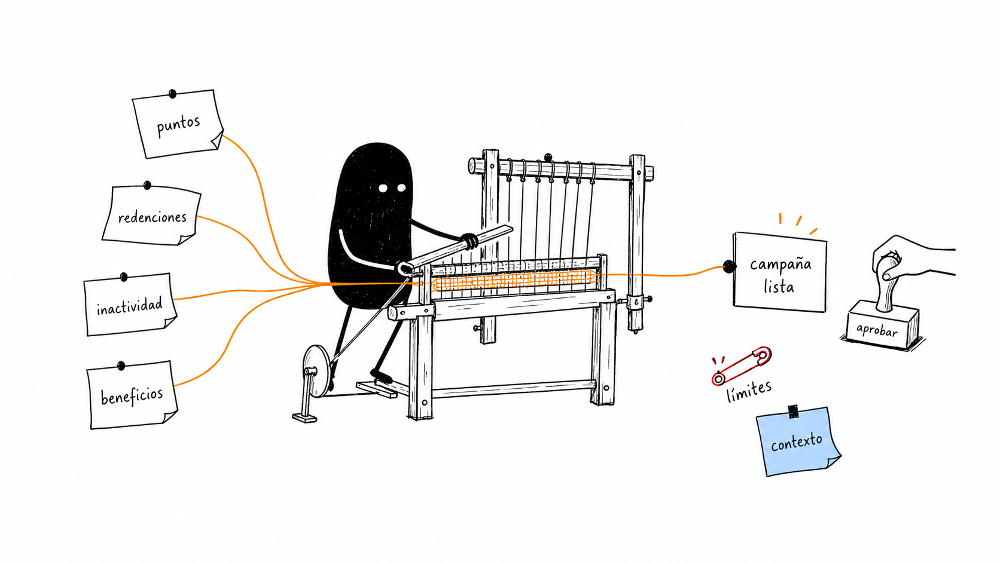
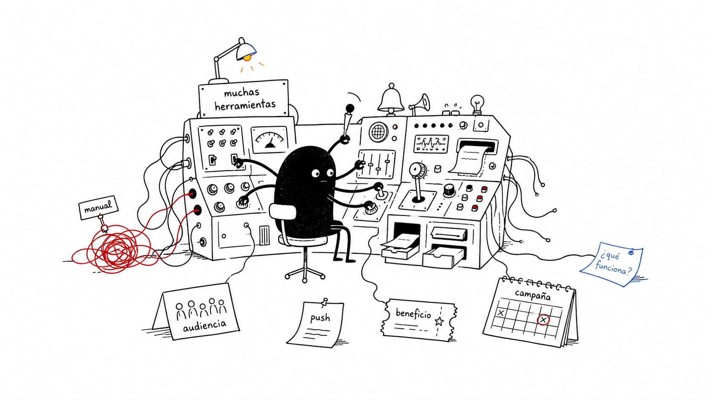
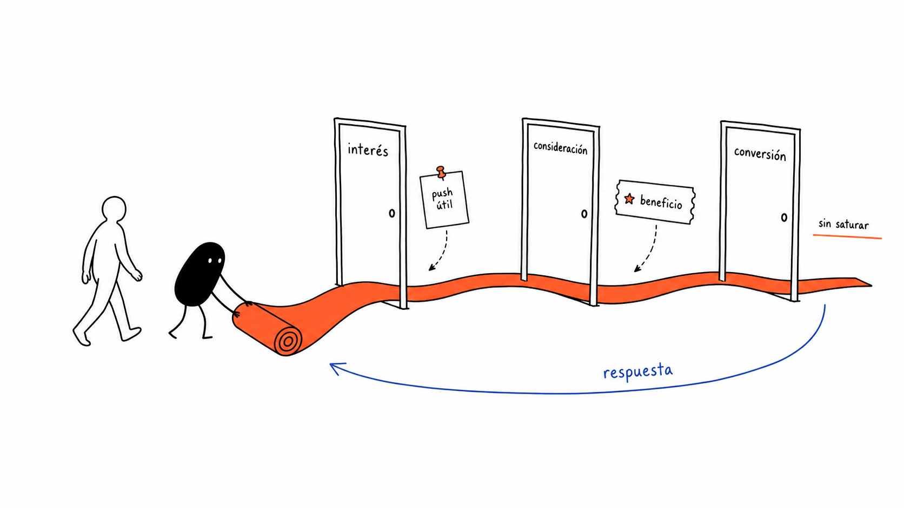

Datos dispersos
Señales valiosas que no siempre terminan en una acción.
De señales dispersas a una campaña personalizada, explicable y lista para aprobar.
Intelligence → Outbound → Adaptive Funnel

El agente conecta el contexto; las reglas protegen el negocio; marketing conserva la decisión final.
Qurable permite crear audiencias, campañas, beneficios y pushes. Pero muchos equipos todavía dependen de trabajo manual y conocimiento experto para decidir qué hacer, con quién y cuándo.
Señales valiosas que no siempre terminan en una acción.
Marketing debe construir cada segmento y campaña desde cero.
El resultado no vuelve como evidencia para la próxima acción.

No construir otra IA que “inventa campañas”. Construir la inteligencia que convierte el contexto propio de Qurable en la próxima mejor acción. Señales del miembro + capacidades del programa + restricciones del negocio + aprobación humana.
Puntos, redenciones, afinidad, inactividad, misiones y respuesta previa.
Audiencia, incentivo, canal, mensaje, timing y KPI con una justificación visible.
Crear un borrador accionable y medir qué ocurrió después.
Cada etapa entrega valor por sí misma y habilita la siguiente. El MVP demuestra la primera y anticipa las otras dos.
El agente encuentra patrones, detecta oportunidades y enseña cómo convertirlas en campañas dentro de Qurable.
La recomendación se convierte en audiencia, beneficio y push, adaptados al miembro o segmento.
Journeys secuenciales que cambian según lo que cada miembro hace —o no hace— después.
Interpreta el objetivo, resume patrones, propone alternativas, explica y genera copy.
objetivo → hipótesis → recomendación
Agrupa miembros, calcula afinidad, rankea oportunidades y compara performance.
señales → segmentos → score
Controlan elegibilidad, presupuesto, margen, frecuencia, consentimiento y vigencia.
policy → límites → seguridad
Expone campañas, audiencias y beneficios; crea borradores dentro de la plataforma.
read tools → draft tools → audit
Define el objetivo y aprueba antes de activar. El copiloto amplifica; no reemplaza.
review → approve → launch
“Quiero reactivar miembros sin superar este costo”.
Inactividad, redenciones, puntos, afinidad y beneficios disponibles.
Segmento explicable y evidencia que lo sostiene.
Audiencia, beneficio, push, timing y KPI.
Marketing revisa supuestos, costo y mensaje.
La campaña queda creada mediante el MCP.
Un objetivo escrito en lenguaje natural termina, en minutos, convertido en una campaña real y explicada dentro de Qurable.
No es solamente volver a impactar. Es elegir la siguiente interacción útil usando lo que Qurable ya sabe del miembro.
Reconocer interés y aportar valor sin entregar todavía el incentivo máximo.
Presentar una propuesta relevante y observar nuevas señales.
Activar el beneficio correcto cuando existe intención suficiente.

En canales propios conviene hablar de lifecycle retargeting o behavior-triggered journey, no de publicidad paga tradicional.
Medir tiempo ahorrado, completitud del borrador y claridad de la explicación.
Comparar contra grupo control: reactivación, redención, revenue y opt-out.
Usar cada respuesta como nueva señal para la próxima decisión.
El MVP crea borradores; no dispara campañas solo.
La IA propone dentro de límites configurados.
Quiet hours, caps y exclusiones para evitar saturación.
Consentimiento, opt-out y prohibición de atributos sensibles.
Cada recomendación muestra señales, supuestos y datos faltantes.
No prometer uplift: probar con control y nivel de confianza.
Miembros, puntos, redenciones, beneficios, campañas y misiones.
No se queda en una recomendación: configura una acción concreta.
La respuesta y la redención vuelven como evidencia de negocio.
Copiloto hoy. Outbound personalizado mañana. Funnel adaptativo después.
Qurable Engage Copilot detecta oportunidades y transforma un objetivo de negocio en una campaña lista para aprobar: audiencia, incentivo, mensaje, timing y medición.
Del dato → a la acción → al aprendizaje